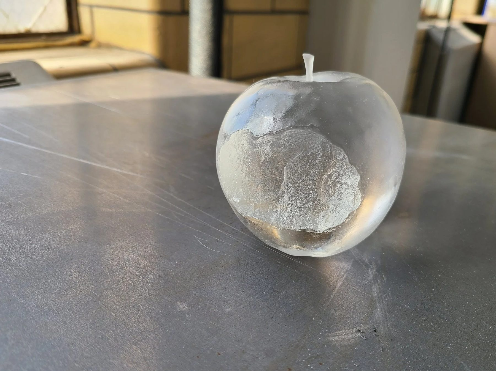
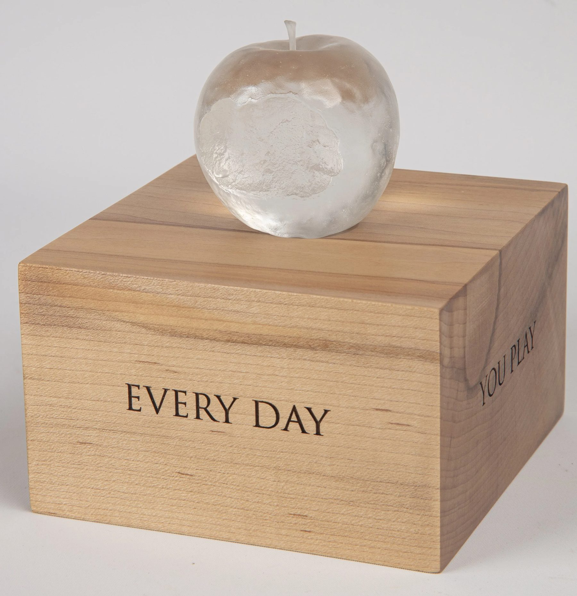
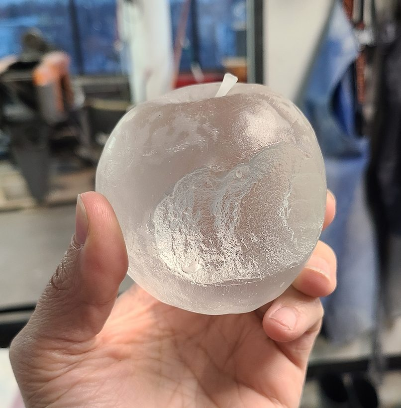
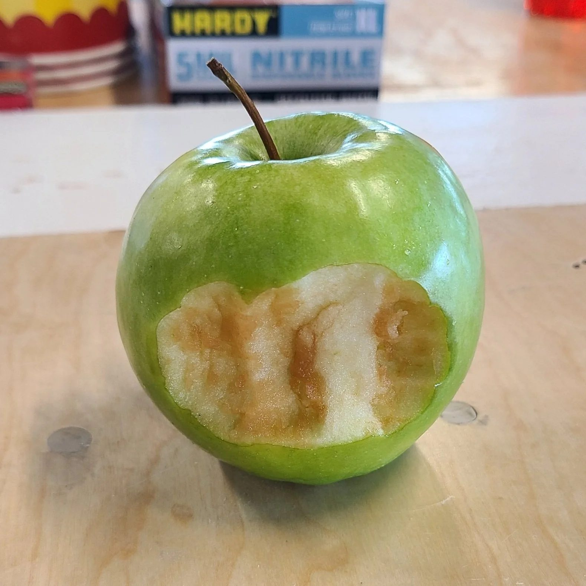

Glass / 2024 / Chicago, IL
Apple
Industry of the Ordinary

A cast glass apple, molded from a freshly bitten one.
The work
A freshly bitten apple, cast in glass for the artist collective Industry of the Ordinary and a private collector with a personal connection to the artists. It holds a single moment.
The material question
An apple browns in minutes. The bite had to be captured before the moment was gone.
The making
The day was scheduled like an organ transfer. The bite was taken with the collector, the apple went straight into a bag and across the city to the studio, where a flask sized to it and the rubber were ready to pour. There was almost no browning. The teeth marks look as if they just happened, and the mold smelled of fresh apple.
In place
We worked with Industry of the Ordinary again a few months later, on Palimpsest at the Driehaus Museum.
Details
- Year
2024 - Location
Chicago, IL - Category
Glass - Materials
Cast glass
Credits
- Industry of the Ordinary
- Glass: Ally Reza
Studio
- ChiLab Studio
- Chicago, Illinois
- Established 2013



Bring us a drawing,
a model, or a hunch.
The studio
Specialty material projects for architecture, interior design, public art, and the fine arts.
ChiLab Studio, Chicago, Illinois. Established 2013.
What we do
- Metal casting
- Glass
- Finishes
- Digital fabrication
- Metal fabrication
- Restoration
- Project management
Contact
info@chilabstudio.com
chilabstudio.com
Instagram @chilabstudio